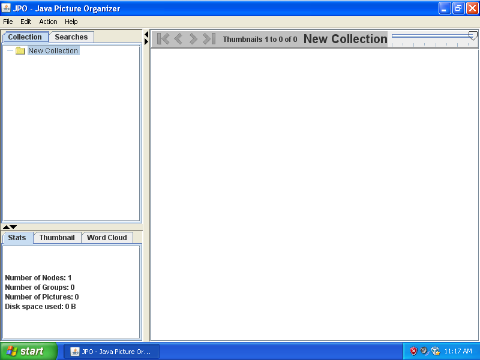
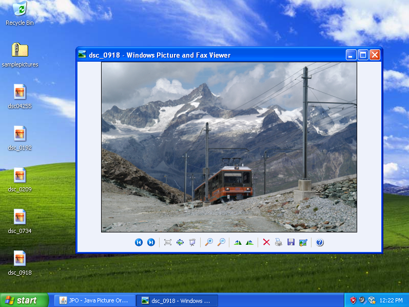
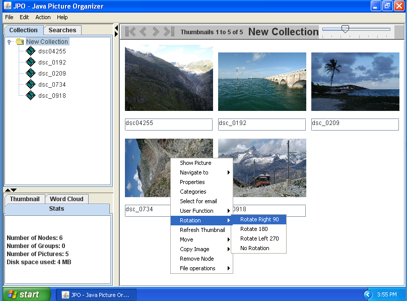
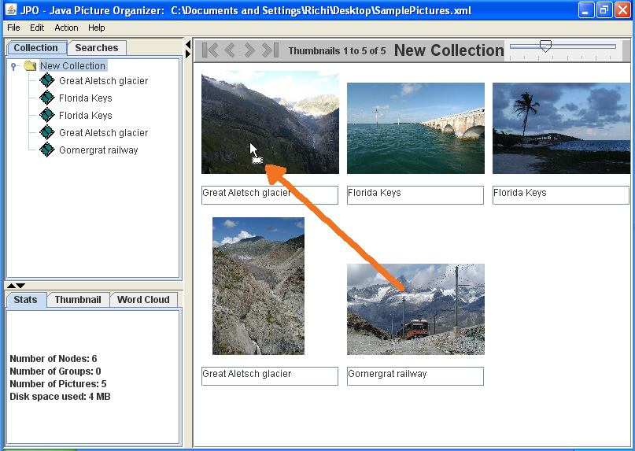
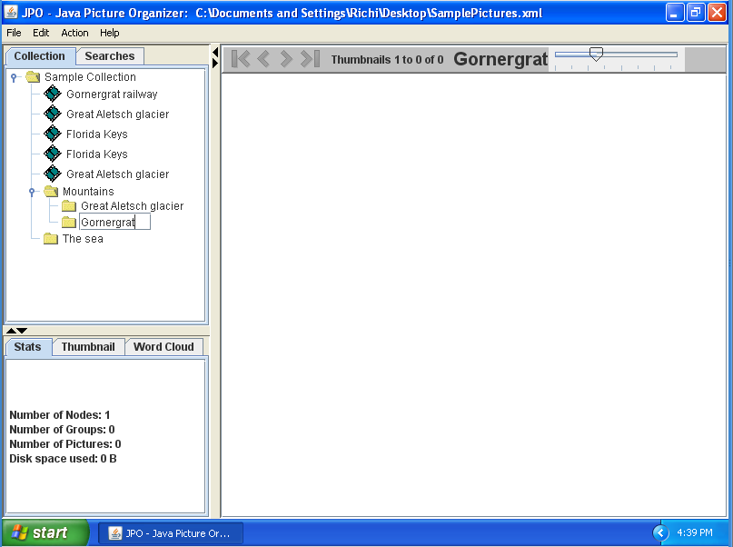
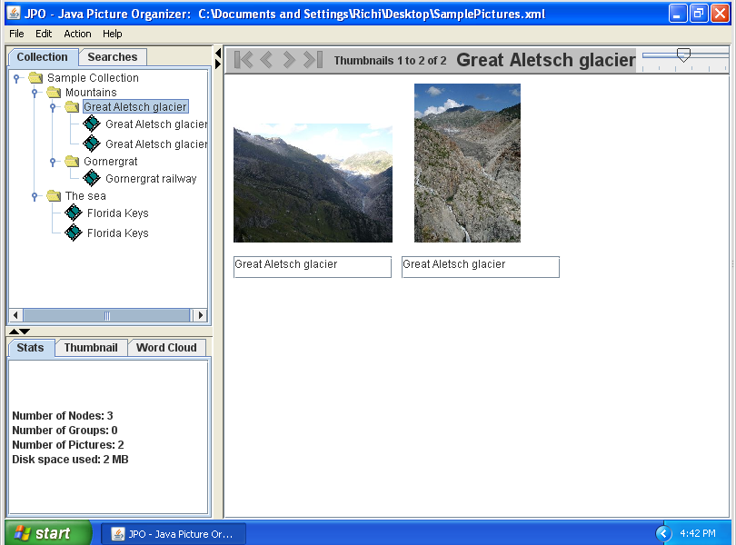
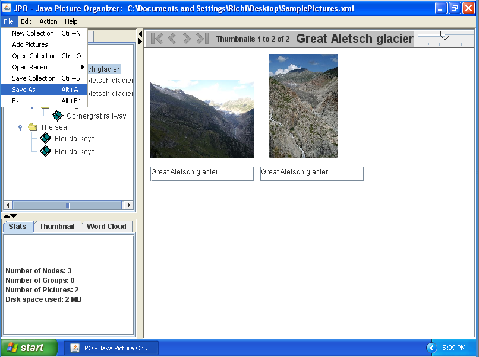
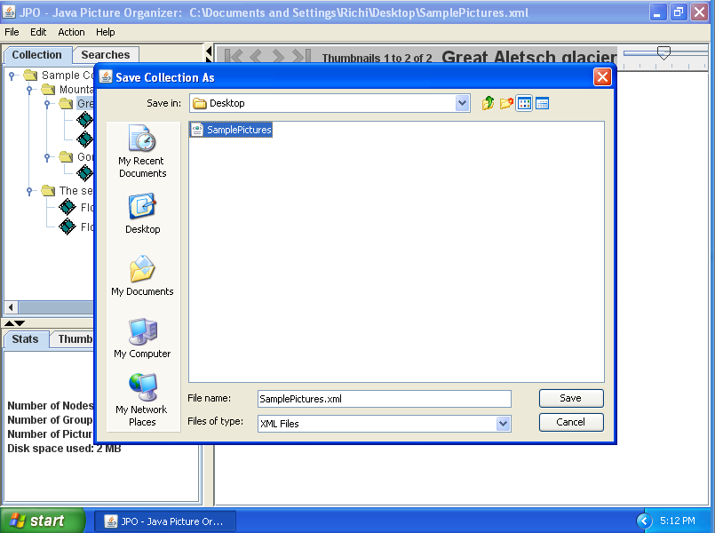

JPO Java Picture Organizer
About JPO
Introduction
Features
Screenshot
Reviews
Technical description
User Guide
Installing JPO
Requirements
Options
Java Web Start
Windows Installer
Local Installation
Source Installation
Potential Problems
The project
Thanks
Links
Author
License
Changelog
Bugs
Potential Features
Launched: 14.1.2003
Tutorial: Your first use of the Application: Create a new collection, add pictures and organise them
Objective:
In this tutorial you will learn:
- How to add pictures to a new collection.
- How to Organise pictures by
- giving them descriptions
- moving pictures with drag and drop
- sorting pictures
- creating Groups
- Save and reopen your collection
Start the application
There are many ways to start JPO which is why there is an entire page on this website devoted to setting it up. Most importantly you need Java. If you haven't got java or have an old version, get it from http://java.sun.com/javase/downloads/index.jsp#jre. You need the Java Runtime Environment (JRE). The other downloads are for those that want to develop Java programs.
The simplest way to start JPO is by clicking on the "Start now!" hyperlink at the top left of this page. This fires up "Java Web Start" which in turn downloads all the bits and pieces from the Sourceforge web site and then runs JPO on your computer.
You will get a warning about the digital certificate. Since this is not a commercial project I am not going to buy a certificate and you must simply click the message away.
The application window should pop up like this:
Adding pictures to your collection
For the purpose of this tutorial I have put some pictures of a trip to the mountains and a trip to the sea here. Download and unzip them to your Desktop.
Here is what your Windows Desktop might look like:
Now click on File > Add Pictures:

JPO responds with a window which allows you to choose the pictures you would like to add to your collection:

On this dialog window you go to the directory on your computer where the pictures you would like to add are locate. In this example they are on the Desktop. In your case they might be in "My Documents", the C:\ drive or a Memory Stick on drive G:\
In the middle panel you see the files in the directory. You can pick a single picture to add by clicking on it. You can choose additional pictures if you press down the Ctrl key on your keyboard and click on another picture. To pick a range of pictures you click on the first one without pressing anything on the keyboard. Then depress the Shift key and keep pressing it down. Then click on the last picture file. All the pictures between the first and last are selected and highlighted.
The options on the right side do the following:
- Recurse subdirectories
- If this is ticked JPO will open and look for pictures in subdirectories of directories you have selected. This allows you to add huge trees of pictures. You could for instance simply select the C:\ drive and JPO would look for pictures in all subfolders.
- Add new pictures only
- This tells JPO not to add pictures you already have in your collection a second time. This allows you to loadd all the pictures from a directory over and over again and JPO will only add those pictures that are new.
- Show thumbnail
- Tells JPO to prepare a thumbnail in the tabbed pane behind the Options. Not very useful.
- Retain directory structure
- Usually when you add a directory tree of pictures you would like each subdirectory to become a Group in your collection. This option allows you to turn that behaviour off and all pictures will be added to the same group.
Now click add and you should see the pictures in your collection:

The slider in the top right of the JPO window allows you change the viewing size of the thumbnail images.
What's that picture of the Great Aletsch glacier doing on the side like that? Let's rotate it! Point the mouse at the thumbnail and do a right-click. From the pop-up menu choose "Rotate Right 90". JPO will rotate the image and show it upright. Note that JPO did not modify the original disk picture file. That image is still sideways. Use a graphics program of your choice to modify the source picture (and loose quality in the modification).
Organising your pictures by labelling them
Now let's label the pictures. To do this click at the filename underneath the thumbnail and change the descriptions. Note that you are changing the description in the collection and not the picture on disk. The description is specific to the image in it's position in the collection; i.e. if you have the same picture a second time in the collection, in a different context for example, it can have a different description there despite being the same on-disk picture.

Organising pictures with Drag and Drop
To rearrange the pictures, use drag and drop. You pick up a picture by left-clicking on it and keeping the mouse button depressed. Then move the mouse to where the picture should be dropped and release the mouse. To cancel an inadvertant drag operation press the Esc key on the keyboard.
Sorting your pictures
JPO allows you to sort the pictures in your groups by the time you took the picture, the description and some other fields you can populate. To sort the pictures, point the mouse at the folder icon which holds the pictures and right-click. A popup menu will appear that has offers to sort by the different criteria.

Creating Groups
You create a group by right-clicking on the node under which you would like to add a group. In the pop-up menu choose Add > New Group.

To change the description of the group click it to select it and press F2 to get a cursor. Then edit. You can nest as deeply as you like.
Then, drag and drop the pictures to the correct folders and you might have a collection like this:
Saving your collection
JPO saves the information about your collections in xml files on your computer. To save your collection choose File > Save as from the the menu. JPO will respond with a Save As dialog. Since this is a new collection the File > Save would also have brought you to the Save As dialog.
In the dialog navigate to the folder where you would like to create the JPO collection file and give a name for the file. Then press "Save"
After saving JPO pops up a dialog that confirms the save. In this dialog you can choose that JPO should open the collection you just saved as the first thing it does when the program starts up.

Opening a collection
Use File > Open Collection to bring up a dialog window which allows you to locate the collection xml file and pick it.
Alternatively, JPO "remembers" the last few collections that you worked with and has a shortcut to them. Look at the File > Open Recent menu item. You can simply click a recently used collection to open it up.

Feedback?
Please provide feedback on this tutorial to richard.eigenmann@gmail.com
Last update to this page: 13.9.2009
Copyright 2009 by Richard Eigenmann, Zürich, Switzerland